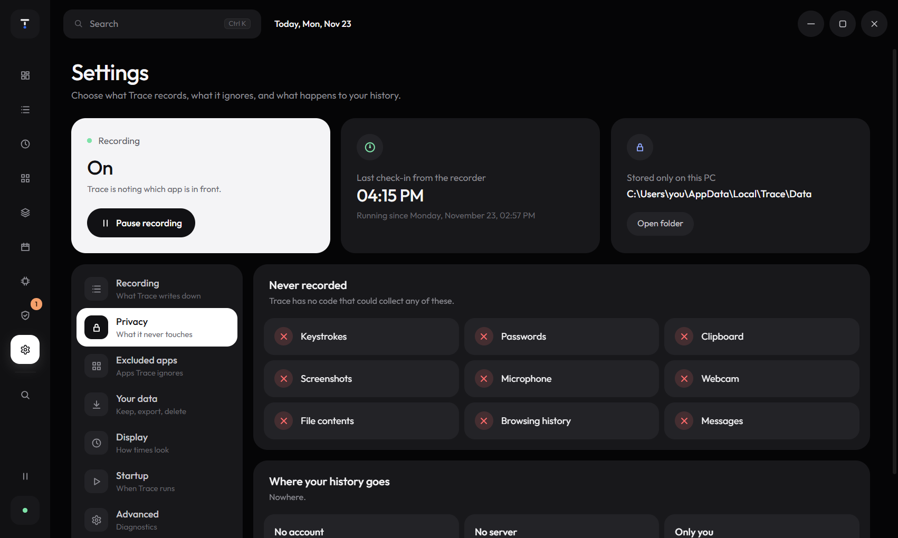
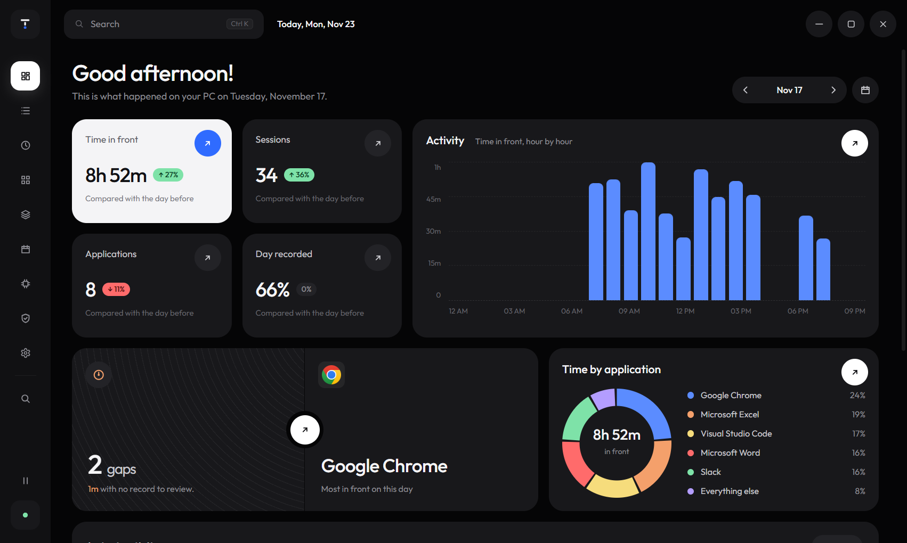
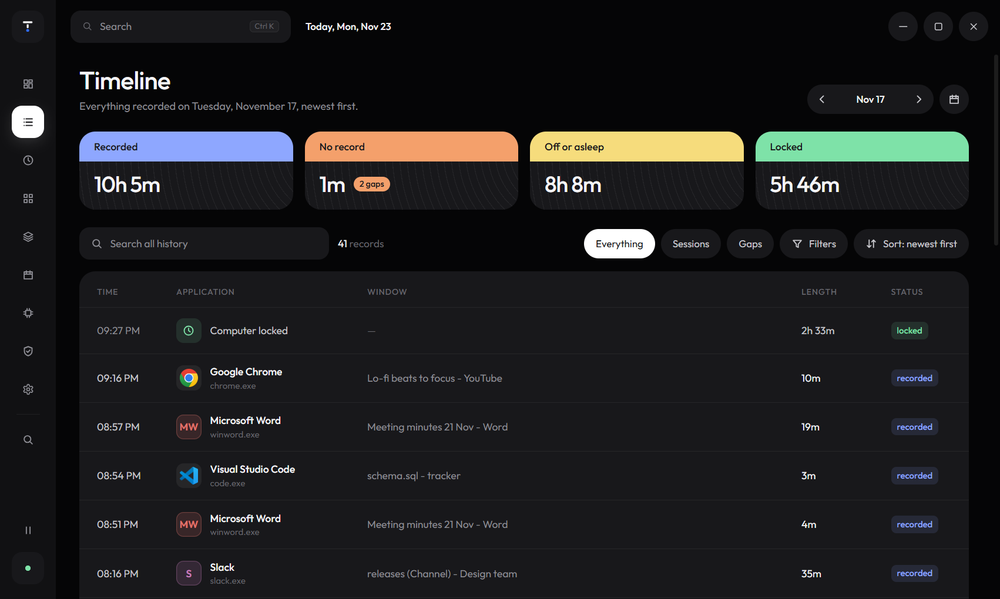
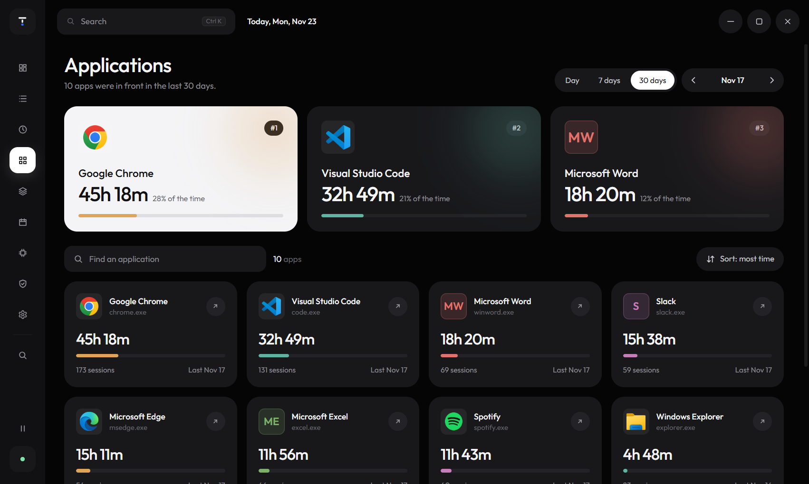
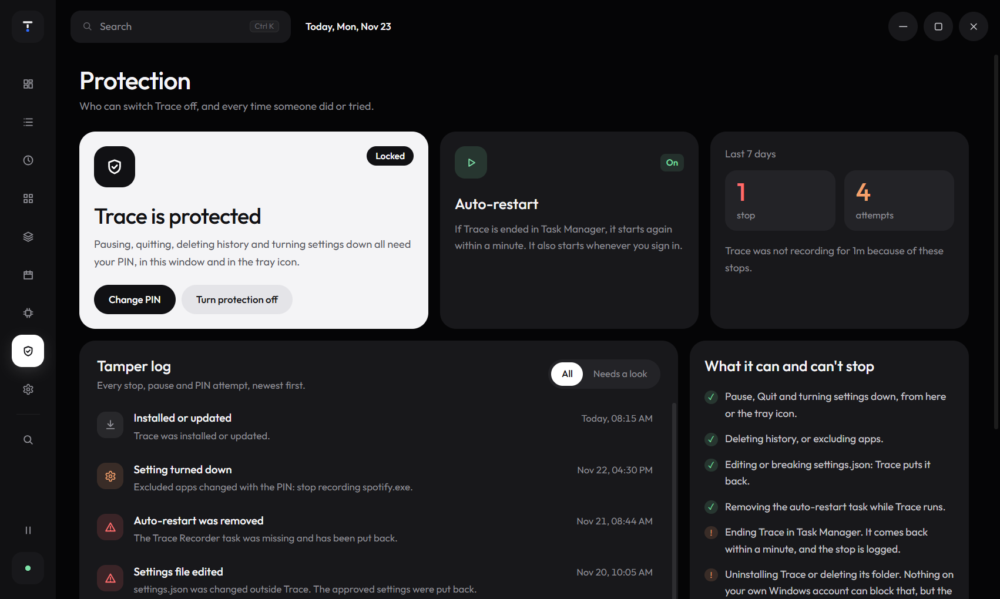
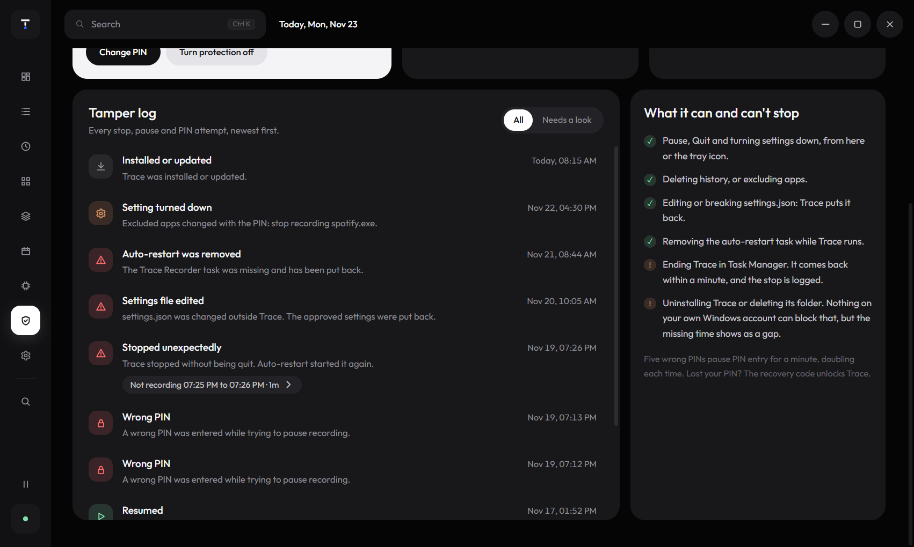

A private, local history of how a Windows computer is used.
Trace records which applications were in use and when, so the owner of a computer can look back at any hour of any day and see what happened. Everything stays on the machine.
Version
Platform
Date
0.3.0
Windows 10 and 11
November 2026
Summary
Trace is a desktop application that keeps a timeline of a Windows computer's use: the application in front, its window title, when the machine was idle, locked, asleep or switched off. It is built for one person, the owner of the computer, and it answers questions a screen-time total cannot, such as what was open at seven last night or was this laptop used while I was away.
It works without an account, a server or an internet connection. The history is a single file on the owner's disk, readable only through their own Windows account, and the owner can pause, exclude, export or delete any of it.
0bytes sent off the machine. No account, server or telemetry.
2separate programs: a recorder and a dashboard.
1 minlongest the recorder stays off if someone ends it.
215automated tests across the recorder and the dashboard.
1The problem
Existing screen-time tools summarise. They report that a browser was open for two hours today, which is rarely the question a person actually has. The useful questions are about a particular moment:
What was I doing on Tuesday afternoon? Was my computer used while I was out?
Answering them needs the shape of the day kept intact, not a daily total. Windows does not keep this history by default: its own logs record boots, sign-ins and sleep, but not which application was in use, and they roll over after weeks.
The tools that do record this level of detail are mostly workplace monitoring products. They send data to an employer's server, often capture screenshots or keystrokes, and are designed to watch someone else. There is no well-made tool for a person who simply wants a reliable record of their own machine.
2The concept
Trace keeps every session with its real start, its real end and what was on screen, so a day can be rebuilt rather than summarised:
09:00ChromeProject brief, Google Docs20m
09:20VS Codetracker, main.ts40m
10:00ChromeGitHub30m
10:30Idleno input10m
10:40Lockeduntil 11:3050m
It behaves like a historian rather than a supervisor. It records that something happened and when, never the private content of it. Its user and its subject are the same person.
3Design principles
Privacy in Trace is a property of how it is built, not a setting the user has to find. Four rules hold throughout.
Local first, with nothing to switch off
There is no network code in the recorder. The history is a SQLite file under the user's own profile, and the dashboard reaches it only through a Windows named pipe that admits the signed-in account and nobody else.
Filtering happens before anything is written
An application the owner excludes produces no session, no title and no event. It is never stored and then hidden; it is simply never written. Pausing works the same way and survives a restart.
Deleting deletes
The database has no "hidden but kept" state. A deleted day, application or full history is gone from the file.
It never invents activity
If the computer loses power mid-session, the session is closed at the last confirmed moment and marked as interrupted. Trace would rather undercount than guess.
What Trace records
The application in front, and for how long
Window titles, which can be switched off
Idle time, as a single number from Windows
Lock, unlock, sleep, wake, sign-in and shutdown
Apps running in the background, if turned on
Gaps when Trace itself was not running
What Trace never collects
Keystrokes or passwords
Screenshots or screen contents
Clipboard contents
Microphone or webcam
File, message or browsing contents
Command lines of running programs
There is no code in the project that could collect the items on the right: no keyboard or mouse hooks, no screen capture, no injection into other programs and no browser extension. Every category on the left is visible in Settings and can be turned off.

Privacy in Settings. The list of what Trace never records is part of the app, not only this document.
4What it does
The dashboard is organised around the questions people ask of their history.
Overview
Today at a glance: active time, the most used applications, and what is in front right now.
Timeline
The day from top to bottom, with every session, idle stretch, lock and gap in order.
Calendar
A month at a time, showing which days were busy and linking straight into any day's timeline.
Applications
Each program's history across today, the week and the month, with its window titles.
Background apps
Programs that ran without a window, such as sync or chat clients, when the owner turns this on.
System
Boots, shutdowns, sleeps and sign-ins read from Windows, so gaps in the timeline can be explained.
Protection
A PIN on anything that would stop or weaken recording, automatic restart, and a log of every attempt.
Control
Pause, exclusions, retention period, JSON export, and deletion by range, by application or in full.
5A look at Trace
The screens below come from the version 0.3.0 dashboard, filled with made-up demo history so that no real activity is shown.

Overview. A day at a glance: time in front, sessions, an hour-by-hour chart, gaps, and time by application.

Timeline. Every session, lock and gap in order, with the window that was open.Calendar. A month of activity; each day opens its timeline.
Application detail. One application's day hour by hour, its sessions, and the windows it showed.

Applications. The most used applications over the last 30 days.Gaps. Only the moments with no record: locks, sleeps and times Trace was not running.
6Protection against being switched off
A record of a computer's use is only useful if it cannot be quietly stopped by the person it would reveal. Version 0.3.0 makes the recorder resistant to that without hiding it.
Measure
What it does
Trace PIN
Pausing, quitting, deleting history, or weakening any setting needs a PIN separate from the Windows password. Turning recording up never does. A one-time recovery code covers a forgotten PIN.
Automatic restart
A visible scheduled task starts the recorder at sign-in and again within a minute if it is ended from Task Manager. The task repairs itself if removed.
Settings guard
If the settings file is edited by hand or damaged, the last approved settings are restored and recording continues.
Tamper log
Every stop, wrong PIN, lockout and change is written down with its time, and gaps link to the timeline for that day.
Lockout
Five free attempts, then waits that double from one minute up to one hour, kept across restarts.
None of this is covert. Trace keeps its tray icon, appears in Task Scheduler under its own name, and can always be turned off by the owner.

Protection page. Status, auto-restart and the week's stops at the top.PIN prompt. Pausing, quitting or weakening a setting asks for the Trace PIN.

Tamper log. Every stop, wrong PIN and change, with what Trace can and cannot stop.
7How it is built
Trace is two programs. The recorder is the product; the dashboard is a window onto it and can be closed at any time without interrupting recording.
Figure 1. Data flows one way into storage. Only the recorder writes; the dashboard asks for finished figures.
Decisions that shape the system
The recorder outlives the window. Pausing from the tray works even if the dashboard has crashed or was never opened.
One writer. Every duration and total is calculated in one place, so two screens can never disagree.
A named pipe, not a local web port. A port can be reached by any program and by web pages in the browser; the pipe admits only the owner's account.
Per-user install. No administrator prompt. The application and the history both live inside the user's own profile.
8Technology
Part
Technology
Recorder
C# on .NET 10, published as one self-contained executable. Windows Forms for the tray icon and PIN prompt; direct Windows API calls for window and power events.
Storage
SQLite through Microsoft.Data.Sqlite, with versioned migrations built into the executable and a backup taken before each upgrade.
Security
PBKDF2-SHA256 with 600,000 iterations for the PIN, constant-time comparison, and a pipe restricted to the user's Windows identity.
Dashboard
Electron 43, React 19, TypeScript, Vite, Tailwind CSS 4, TanStack Query, React Router and Recharts.
Shared contract
One message definition kept in matching C# and TypeScript files, so both programs agree on every request.
Installer
electron-builder with NSIS. Upgrades pause automatic restart; uninstalling asks what to do with the history.
Testing
xUnit for the recorder and Vitest with Testing Library for the dashboard: 215 tests in all.
9Where it stands
Version 0.1August 2026
Recording engine, privacy gate, timeline, calendar, applications, tray, installer and crash recovery.Released
Version 0.2November 2026
Correct application names, icons, background apps, Windows system events and a redesigned dashboard.Installed
Version 0.3November 2026
Protection: PIN, automatic restart, settings guard and tamper log.Installed
Next
A read-only import of the files Windows lists as recently opened, off by default, and a findings view that points out unusual activity such as use during hours the owner was away.Planned
10Limits and risks
It sees the computer, not the person. Trace can show that the laptop was used, not who used it. A shared Windows account looks like one person.
It sees applications, not content. By design it cannot show that a file was sent or a message read; that evidence lives in the other application's own records.
An administrator can still stop it. Protection raises the effort needed and records the attempt, but someone with full control of Windows can remove any program.
Misuse as a monitoring tool. Trace stays visible, local and controlled by the account it records, which keeps it unsuited to watching someone else in secret.
Trace gives the owner of a computer a dependable, private memory of how it was used, and keeps that memory under their control alone.